有理函数积分
有理函数积分
部分分式分解
最简单的多项式函数无需赘言，因此我们首先考虑有理函数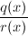的符号积分，其中，满足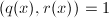，不失一般性还可假设。最朴素的办法是利用部分分式分解。
设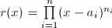，反复利用引理1则有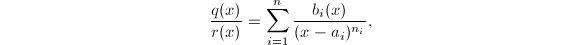其中。再将 在处展开可得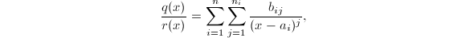其中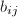为常数。于是得到
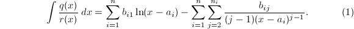
在处展开可得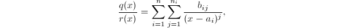其中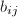为常数。于是得到
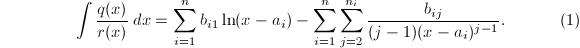
有理函数符号积分的问题在理论上解决了，即所有有理函数的积分均可由有理函数和对数函数表示，分别称为积分的有理部分和对数部分。但还有几个不得不处理的问题：一方面需要在 上完全分解，而精确地做到这一点并不总那么容易，另一方面我们更希望看到的是，在算法的计算中除了用于表示最终积分的数以外，不要出现其他系数域扩域中的代数数。
上完全分解，而精确地做到这一点并不总那么容易，另一方面我们更希望看到的是，在算法的计算中除了用于表示最终积分的数以外，不要出现其他系数域扩域中的代数数。
Hermite方法
Hermite方法使用多项式的无平方分解来代替完全分解，而无平方分解可以在系数域中完成。设的无平方分解为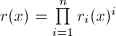，其中无平方因子且两两互素。从而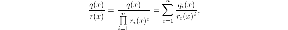其中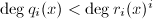。因此我们只需要考虑积分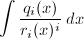即可。
由于无平方因子，故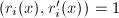，可设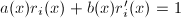，代入进行分部积分
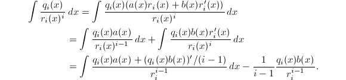
为了简便起见，我们将省略变元 与记号，以下的积分与导数总是对而言的，例如上式即可简写为
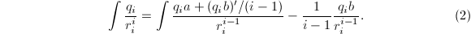
与记号，以下的积分与导数总是对而言的，例如上式即可简写为
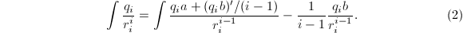
此过程称为Hermite约化过程。通过一次分部积分，被积函数分母中 的次数便降低一次，如此续行即可完全得到积分的有理部分。
的次数便降低一次，如此续行即可完全得到积分的有理部分。
Horowitz-Ostrogradsky方法
Hermite方法避免了完全分解，但仍要求无平方分解和关于的部分分式分解。Horowitz-Ostrogradsky方法则不需要其他工具，通过待定系数法将问题归结为线性方程的求解问题。
设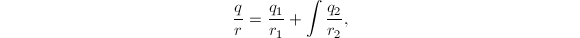其中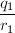为积分的有理部分，由部分分式的结果可知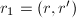，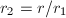。求导得到 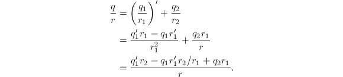 从而问题归结为求，满足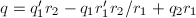且，。以，的系数作为未知变量，这是一个至多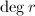维的线性方程组问题。
 [3]，其中
[3]，其中 为乘法的复杂度。而Horowitz-Ostrogradsky方法的复杂度为
为乘法的复杂度。而Horowitz-Ostrogradsky方法的复杂度为 （解线性方程组），尽管渐进意义上后者要比前者慢将近两个量级，但在实践中还是要分析具体情况而定。
（解线性方程组），尽管渐进意义上后者要比前者慢将近两个量级，但在实践中还是要分析具体情况而定。
Rothstein-Trager方法
下面的问题是如何求出对数部分，因此我们设无平方因子的首一多项式，并可设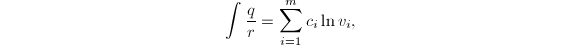其中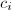为互不相同的常数， 为无平方因子的首一多项式，两两互素（可以通过合并项来满足这些条件）。求导得到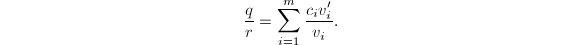由于无平方因子且两两互素可知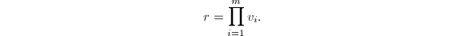记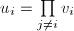，则有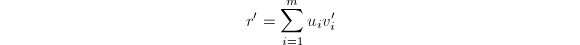及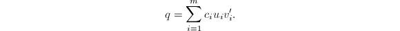于是对于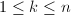
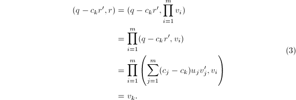
最后一个等式成立是因为
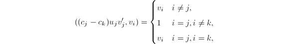
从而
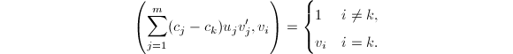
为无平方因子的首一多项式，两两互素（可以通过合并项来满足这些条件）。求导得到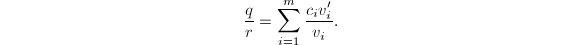由于无平方因子且两两互素可知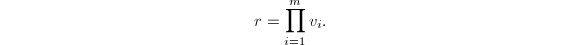记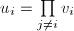，则有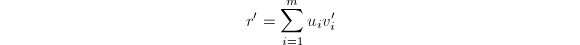及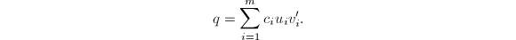于是对于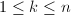
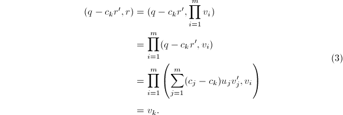
最后一个等式成立是因为
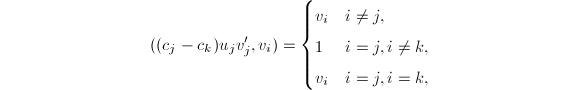
从而
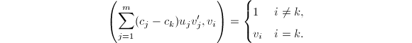
由式(3)可以看出，当我们找出系数后即可通过最大公因子的计算求出。如何求出呢？同样的论证可以知道1\Leftrightarrow \exists 1\le k\le m,y=c_k$" class="latex-inline" style="vertical-align: -5px" width="271" height="18">，而 （此结式称为Rothstein-Trager结式），故求解关于
（此结式称为Rothstein-Trager结式），故求解关于 的方程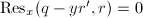即可得到所有的系数。
的方程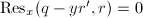即可得到所有的系数。
 ），不难求得
），不难求得
Lazard-Rioboo-Trager方法
Rothstein-Trager方法解决了引入不必要扩张常数的问题，但仍需要计算许多代数数域上多项式的最大公因子，Lazard-Rioboo-Trager方法是对此的一个改进，只需要无平方分解和若干带余除法即可。
设，，由结式的性质得到其中 为非零常数。从而中的重数为满足的
为非零常数。从而中的重数为满足的 的个数。而
可知等于中的重数。由此出发可知：设被积函数的系数域为
的个数。而
可知等于中的重数。由此出发可知：设被积函数的系数域为 ，则只需要在中对和
，则只需要在中对和 做Euclid除法，设为余式序列中关于次数为的多项式，则有
做Euclid除法，设为余式序列中关于次数为的多项式，则有 。另外，如果用多项式余式序列(PRS)算法来计算结式的话，的计算可以与结式的计算同时进行。
。另外，如果用多项式余式序列(PRS)算法来计算结式的话，的计算可以与结式的计算同时进行。
Liouville定理
从直观上来看，所有有理函数总是可以积出。这里“积出”的精确含义是，可以找到一个初等函数作为被积函数的原函数。为了将问题的本质看得更清楚，我们引入如下定义。
容易验证 为一个特征不为零的域，映射满足有
则
为一个特征不为零的域，映射满足有
则 拥有所有分析学教程中求导运算的基本性质，我们在这里仅仅罗列而略去证明[2]。
拥有所有分析学教程中求导运算的基本性质，我们在这里仅仅罗列而略去证明[2]。
微分代数的基本性质使得我们可以完全脱离分析语言，将符号积分的问题视为纯代数问题。而我们关心的“初等函数”，也可以直接用代数语言来描述。
 为一个微分代数，
为一个微分代数， 为的微分扩张，满足，微分算子简记为'。称为在上的初等生成元，若满足以下条件之一：
为的微分扩张，满足，微分算子简记为'。称为在上的初等生成元，若满足以下条件之一：
- 在上是代数的，即有
![$f(x)\in K[x]$](latex/latex2png-Integration_40994369_-5.gif) 使得；
使得； - 在上是指数的，即有使得（记）；
- 在上是对数的，即有使得（记）。
称 为上的一个初等函数域，若，为上的初等生成元。任上的一个初等函数域中的元素称为上的初等函数。
为上的一个初等函数域，若，为上的初等生成元。任上的一个初等函数域中的元素称为上的初等函数。
 、或
、或 时即为通常意义下“初等函数”。
时即为通常意义下“初等函数”。
下面来自Liouville的重要定理，描述了积分为初等函数时必定具有的形式，证明需要对三种特殊扩张情形进行讨论，并最终得出一般情形[4]，[2]。
 为
为
超越对数函数积分
分解引理
设为上的一个超越对数函数，我们考虑的积分问题。可设，其中， ，互素且，下面的引理使得我们能够沿着和有理函数积分类似的道路走下去。
，互素且，下面的引理使得我们能够沿着和有理函数积分类似的道路走下去。
代替应用Liouville定理可得其中，，记，通过拆分对数项可以保证为首一多项式。求导得设，其中。根据为中元素还是中正次数多项式将右端第二项拆为两部分，可知
由于，故中的多项式的导数仍为中的多项式，又，可知右端的一项为中的多项式；又由为中首一多项式，可验证为中的真分式。
由于在上超越，等式两端的关于的多项式和真分式必定对应相等，从而
故 ，都在上有初等积分。
□
，都在上有初等积分。
□
多项式部分
由分解引理，我们可以等价地分别对多项式部分和有理部分分别求积分，如果其中有一个无初等积分，则 也必无初等积分。
也必无初等积分。
中函数的积分，我们预先需要知道如何对基域中的函数作积分。例如我们已经知道有理函数域 上的积分方法，因此便可以解决例如中的积分问题。再取作为新的基域，便能得到中函数的积分方法。如此可以递归的地做下去，构成了一种“塔状”的求积分过程，我们在后面可以看到，类似这样的过程将最终可以在理论上解决任意复杂形式初等函数积分问题。
上的积分方法，因此便可以解决例如中的积分问题。再取作为新的基域，便能得到中函数的积分方法。如此可以递归的地做下去，构成了一种“塔状”的求积分过程，我们在后面可以看到，类似这样的过程将最终可以在理论上解决任意复杂形式初等函数积分问题。
在式(4)中设其中，则有 由于已知，我们的目标是求出和。利用在上超越，可得
若，则为非零常数，否则可约定，于是无论何种情况考虑的最高次项可得所以可知为中小于一次的多项式，可确定下常数以及。当然，由于积分常数的存在， 的确定是在相差一个常数下而言的，设此积分常数为。接下来再考虑两边项可得同样可知于是为中小于一次的多项式，可确定常数及（为积分常数）。如此续行，直到比较项可得积分得最终求出常数，以及上的对数部分
的确定是在相差一个常数下而言的，设此积分常数为。接下来再考虑两边项可得同样可知于是为中小于一次的多项式，可确定常数及（为积分常数）。如此续行，直到比较项可得积分得最终求出常数，以及上的对数部分 （注意这最后一步右端积分未必落在中），从而我们（在相差一个常数的意义下）求出了多项式部分的积分。
（注意这最后一步右端积分未必落在中），从而我们（在相差一个常数的意义下）求出了多项式部分的积分。
有理部分与对数部分
我们希望求出(4)中的和，求积分的有理部分和对数部分可以和有理函数积分类似的做。为确保类似Hermite约化的过程能够进行，我们验证如下的引理。
在 上的分解。则由复合函数求导
若，则存在，使得。由于，而在上超越，必有。则（为常数）为上的代数元，矛盾！
□
上的分解。则由复合函数求导
若，则存在，使得。由于，而在上超越，必有。则（为常数）为上的代数元，矛盾！
□
有了引理3中 的保证，我们就可以施行Hermite约化过程了。将在上作无平方分解，完全类似可以得到式(2)的约化结果，从而求出积分的有理部分。
的保证，我们就可以施行Hermite约化过程了。将在上作无平方分解，完全类似可以得到式(2)的约化结果，从而求出积分的有理部分。
同样有求对数部分的Rothstein-Trager方法的类似版本。设无平方因子，则积分的形式必为，其中为常数，。求得Rothstein-Trager结式关于的根，若有不是常数，则在上必无初等积分；若均为常数，计算最大公因子 即可得到。
即可得到。
超越指数函数积分
我们沿着有理函数积分的道路顺利地解决了超越对数函数积分的问题，接下来自然要考虑的是超越指数函数积分了，即为上的超越指数函数，的积分问题。
但这个问题变得要复杂一些，一方面在计算过程中我们需要在基域中求解微分方程（被称为Risch微分方程[5]）其中， 为未知函数。我们将在微分方程符号解中专门讨论Risch微分方程，而且将看到Risch微分方程和符号积分在某种意义下的相互“纠缠”。现在我们暂时假设已经能够在上完成这样的求解。
为未知函数。我们将在微分方程符号解中专门讨论Risch微分方程，而且将看到Risch微分方程和符号积分在某种意义下的相互“纠缠”。现在我们暂时假设已经能够在上完成这样的求解。
复杂性的另一面在于，无平方因子也不能保证。
因此我们需要对引理3做一个小的修订。
设为在上的分解。则由复合函数求导
若，则存在，使得，从而。由于，故。而可知（为非零常数），这与在上超越矛盾！
□
分解引理
根据引理4，为了能够继续使用Hermite约化，我们需要将分母中的因子分离出来，这就引导我们引入如下定义。
在这样的定义下，有广义分解 ，其中为广义多项式，
，其中为广义多项式，![$q,r\in K[\theta]$](latex/latex2png-Integration_127318506_-5.gif) ，，互素，且有。有类似于引理2的分解引理，证明过程也是类似的。
，，互素，且有。有类似于引理2的分解引理，证明过程也是类似的。
代替应用Liouville定理可得其中，，记，通过拆分对数项可以保证为首一多项式。求导得设为广义分解，根据为中元素还是中正次数多项式将右端第二项拆为两部分。我们要注意多项式求导的特殊性，由于因此多项式求导后每项的次数都不变，故可假定。由于不再是真分式，因此还需将中的最高次项分离出来（例如减去），设，则可得
由于在上超越，等式两端的关于的广义多项式和真分式必定对应相等，从而
故
都在上有初等积分。
□
多项式部分
在式(5)中设其中，则有 由于已知，我们的目标是求出和。由于多项式求导不改变次数，故必有，。比较对应项系数得到
这些是上的关于未知量的Risch方程，我们假定了能够在上求解此类方程或给出无解的结论。若其中有一个方程无解，则在上无初等积分；否则可求出，最后根据求出。
由于已知，我们的目标是求出和。由于多项式求导不改变次数，故必有，。比较对应项系数得到
这些是上的关于未知量的Risch方程，我们假定了能够在上求解此类方程或给出无解的结论。若其中有一个方程无解，则在上无初等积分；否则可求出，最后根据求出。
有理部分和对数部分
由于我们有了引理4的保证，依然可以对广义分解中的进行Hermite约化过程，从而得到积分的有理部分。
同样可以用类似于Rothstein-Trager的方法计算对数部分，设无平方因子，则积分的形式为，可知。记，则及于是
注意到 ，知道可以通过求结式关于的根来求得。同样的，如果此结式有根非常数，则在上无初等积分；若所有根均为常数，则通过计算最大公因子即可求得。
，知道可以通过求结式关于的根来求得。同样的，如果此结式有根非常数，则在上无初等积分；若所有根均为常数，则通过计算最大公因子即可求得。
参考文献
[1]Computer algebra: systems and algorithms for algebraic computation, Academic Press, London, UK, 1988.
[2]Symbolic Integration I: Transcendental Functions(2nd ed.), Springer Verlag, 2005.
[3]Modern Computer Algebra, Cambridge University Press, 2002.
[4]Algorithms for Computer Algebra, Kluwer Academic Publishers, 1992.
[5]The Problem of Integration in Finite Terms, Transactions of the American Mathematical Society 139 (1969), 167-189.